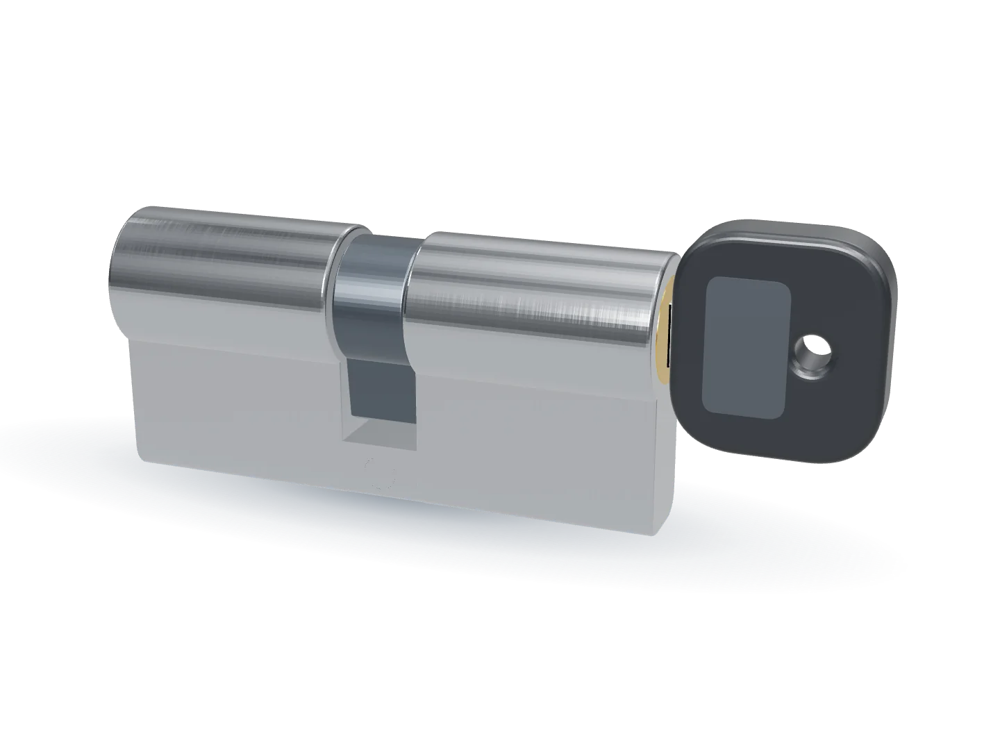
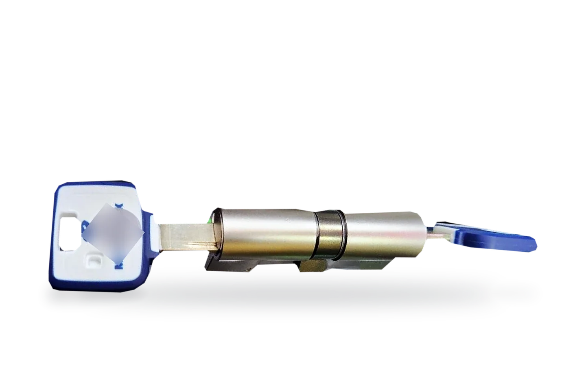
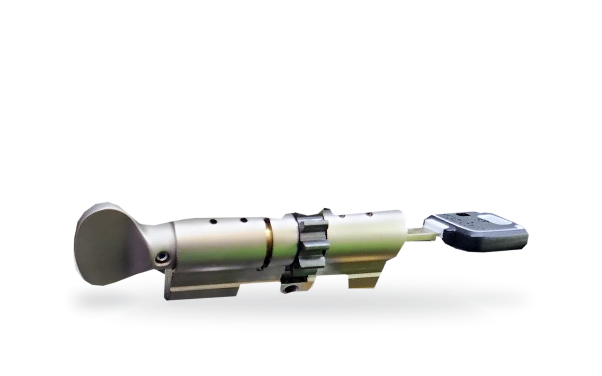
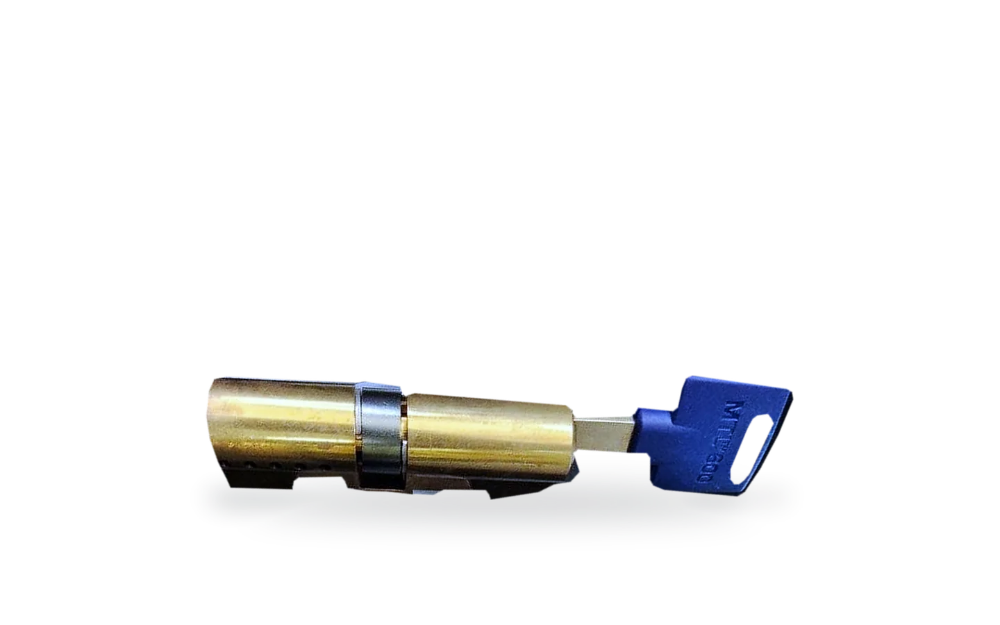
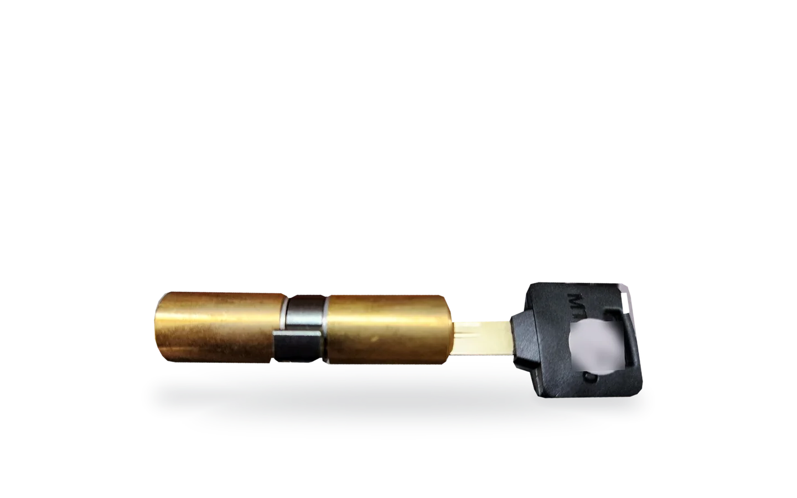
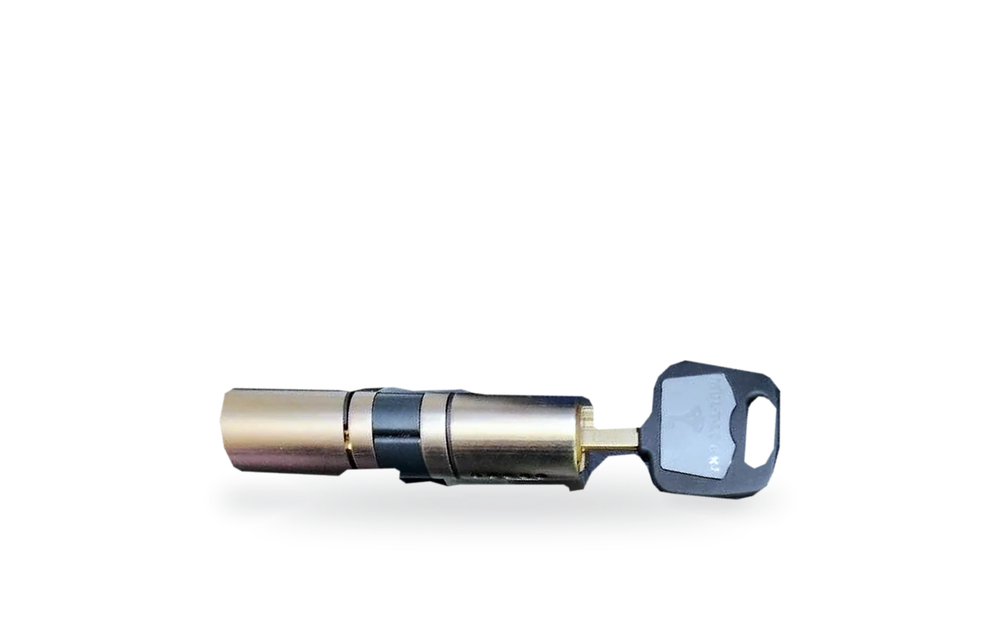
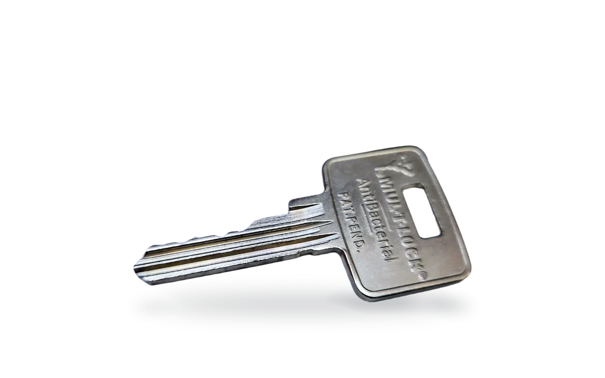

Alta seguridad, pieza a pieza.
Gaon System es el distribuidor exclusivo de Mul-T-Lock en España. Nos dedicamos a la importación, fabricación y distribución de productos y sistemas de alta seguridad para cerrajeros y ferreterías.
- Fundada en 1984
- Cientos de centros técnicos Mul-T-Lock
- Envío a la península en 24 horas
Dos líneas de corte a la vez.
Cada cámara lleva un pin exterior y otro interior. La llave los coloca a la vez en la línea de corte; si uno no llega, el rotor no gira.
Latón, alpaca y acero.
Cuerpo y rotor de latón de alta calidad, leva y rueda dentada de acero, pines de alpaca y acero inoxidable.
Gira la leva. Abre la puerta.
Dentro de cada plataforma, la misma llave abre cilindros, cerrojos y candados.

Recreación 3D, no corresponde a un modelo concreto
Nueve plataformas. Elige el nivel de protección.
Cada plataforma tiene su propia llave y su propia tecnología. La barra marca hasta qué año está patentada la llave.
MTL800antes MT5+Protección premium2039
Mecanismo
- Pines telescópicos en una configuración nueva.
- Muelle alfa doble: elemento móvil patentado en la punta de la llave.
- Barra superior que actúa sobre pines horizontales.
Resiste
Bumping, ganzúa, impresión de llave, taladro, rotura y extracción (versiones reforzadas).

MTL700 Protección de élite2045
Mecanismo
- 10 pines telescópicos.
- Dos imanes giratorios en la llave que actúan con el cilindro.
- Pin telescópico patentado de posición única (concepto del MTL400).
Resiste
Bumping, ganzúa, impresión de llave (también en 3D), taladro y rotura.

MTL600antes Interactive+Protección superior2032
Mecanismo
- Pines telescópicos: dos líneas de corte a la vez.
- Pin OVI patentado en el centro del rotor.
- Llave patentada.
Resiste
Ganzúa, taladro y bumping.

MTL500antes MT5Protección excelente2039
Mecanismo
- Pines telescópicos en una configuración nueva.
- Muelle alfa doble en la punta de la llave.
Resiste
Bumping, ganzúa, impresión, taladro, rotura y extracción (versiones reforzadas).
MTL400antes ClassicProProtección avanzada2033
Mecanismo
- Pines telescópicos.
- Corte patentado único, prefabricado en la llave.
Resiste
Bumping, ganzúa y taladro; rotura y extracción en versiones reforzadas.

MTL300 Protección robusta2033
Mecanismo
- Base 7x7 de pines sólidos.
- Pin telescópico patentado de posición única y diámetro exclusivo.
Resiste
Ganzúa, bumping y taladro. Disponible con rotura controlada.

MTL200 Protección segura2038
Mecanismo
- 6 cámaras con pines sólidos.
- Llave de perfil único de 2,55 mm con tratamiento antibacteriano.
- Se entrega con 3 llaves metálicas.
Resiste
Ganzúa, bumping y taladro.

Classic Protección de siempreSin fecha publicada
Mecanismo
- 5 cámaras con pines telescópicos exteriores e interiores.
- Admite amaestramientos grandes y complejos, de jerarquía y matriz.
GAON/7x7antes 7GProtección accesibleSin fecha publicada
Mecanismo
- 7 cámaras con pines sólidos.
- La plataforma mecánica estándar de Mul-T-Lock.
Más allá del cilindro.
Escudos, cierres y maquinaria de copia controlada. Fotos de producto real de nuestra exposición.
Una llave para lo que haga falta.
La llave Mul-T-Lock es de doble cara: dos códigos en una sola llave. Con eso se resuelven sistemas de llaves muy distintos.
Amaestramiento
Una jerarquía de llaves: cada una abre solo lo que le toca.
02Igualaciones
La misma llave en cilindros, candados y cierres.
03Código determinado
Añade una puerta nueva al código de la llave que ya tienes.
04Una llave para todo
Cilindro, cerrojo y candado de la misma plataforma con una sola llave.
Para cerrajeros, ferreterías y distribuidores.
Únete a la red de centros técnicos Mul-T-Lock con condiciones preferentes.
Solicitar el alta- Producto despiezado, llaves patentadas en bruto y accesorios.
- Posibilidad de manipular el producto debidamente, sin vulnerar los derechos del fabricante.
- Asesoramiento técnico.
- Perfiles exclusivos del producto interactivo patentado.
- Mayores descuentos.